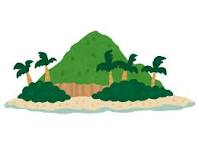

このページでは私の自己紹介について書いていこうと思います。
時間のある方は見て行ってくれると嬉しいです。
私の出身は沖縄県の那覇市です。2才までは那覇で暮らしていました。そこからは石垣島に引っ越ししました。
なので住んでいる期間が石垣島の方が長いです。ですので、ここでは石垣島での事について書いていこうと思います。

石垣島の一番の魅力は海が綺麗なことだと思います！
高校を卒業して一人暮らしを始めたので、毎日の家事に苦戦しています。
他にも趣味や出身 について記載したページもあるので
見て行ってくれると嬉しいです。